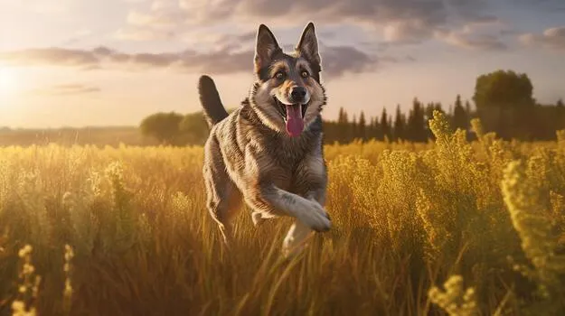
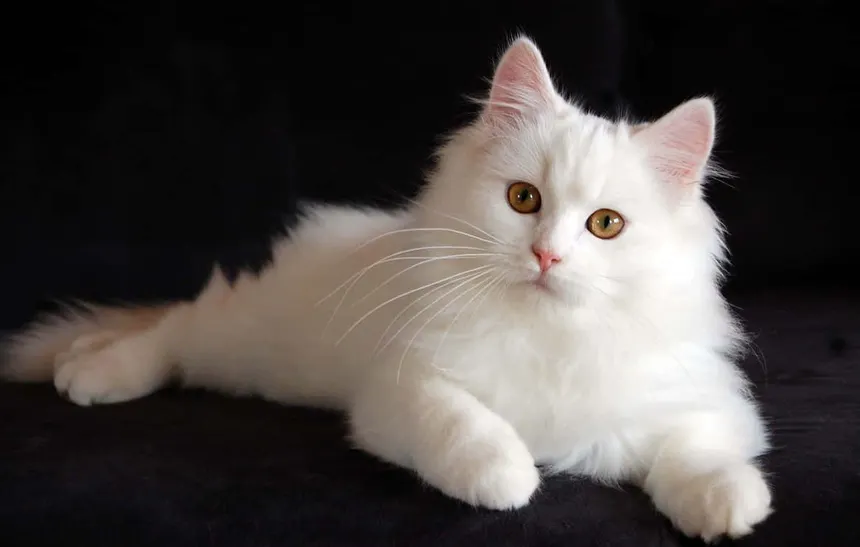

The dog (Canis lupus familiaris) is a domesticated mammal and a subspecies of the gray wolf. It is one of the first animals to be domesticated by humans, with evidence suggesting domestication began over 14,000 years ago, and possibly as early as 23,000 years ago in Siberia. Dogs were bred from wolves by hunter-gatherers and have since evolved into around 450 recognized breeds, displaying vast diversity in size, shape, color, and behavior.

The Persian cat is one of the oldest and most popular cat breeds, known for its long, luxurious coat, sweet expression, and calm temperament. Originating in Persia (modern-day Iran), it was developed further in Britain and is now beloved worldwide for its gentle and affectionate nature.